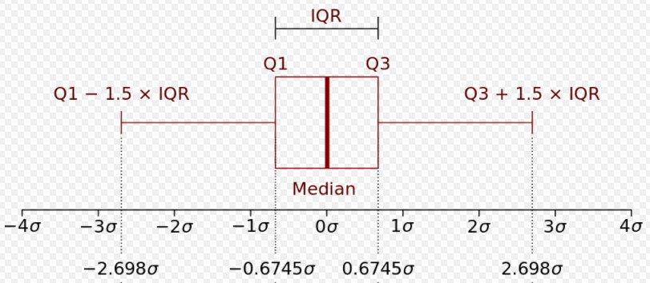
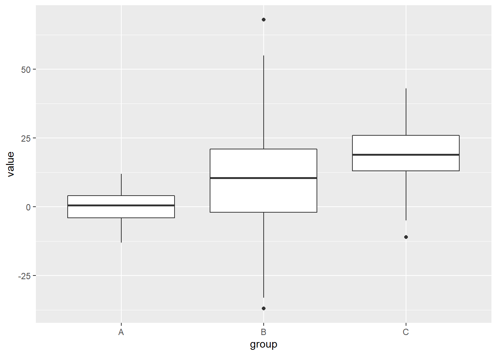
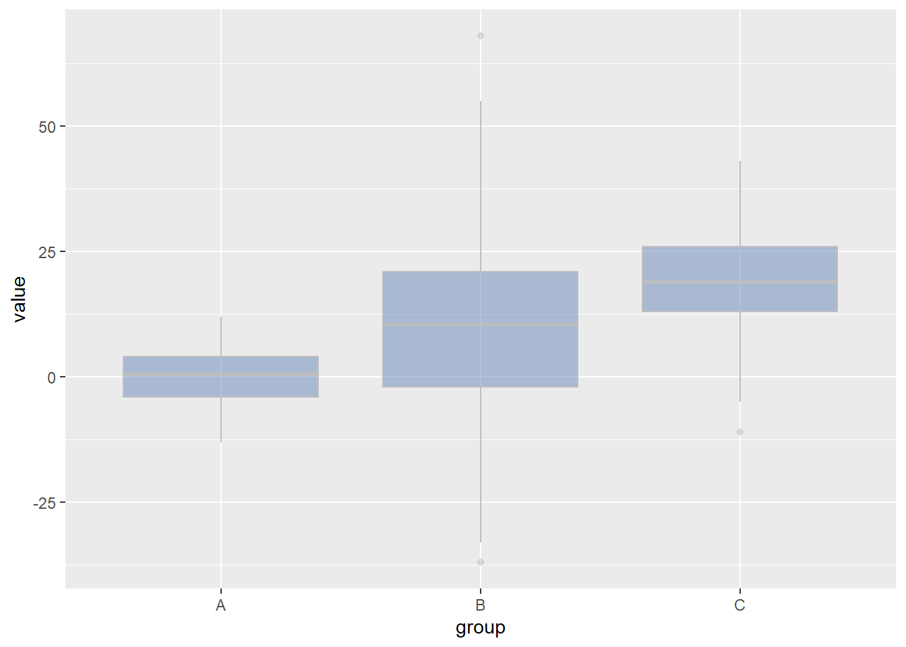
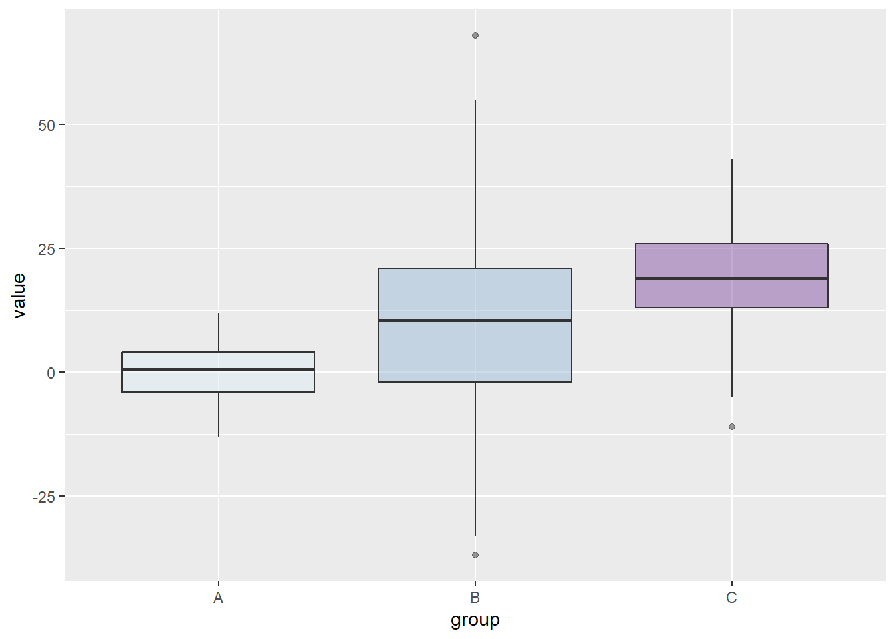
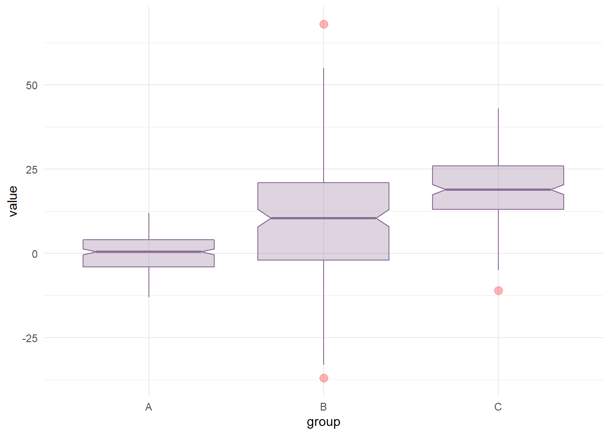
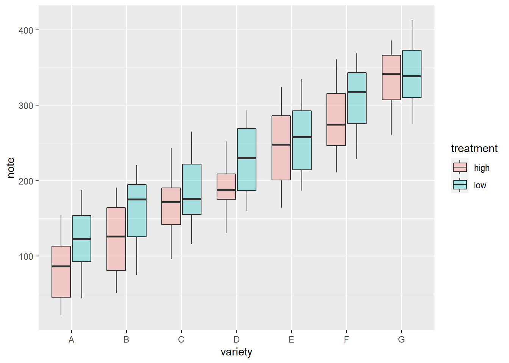
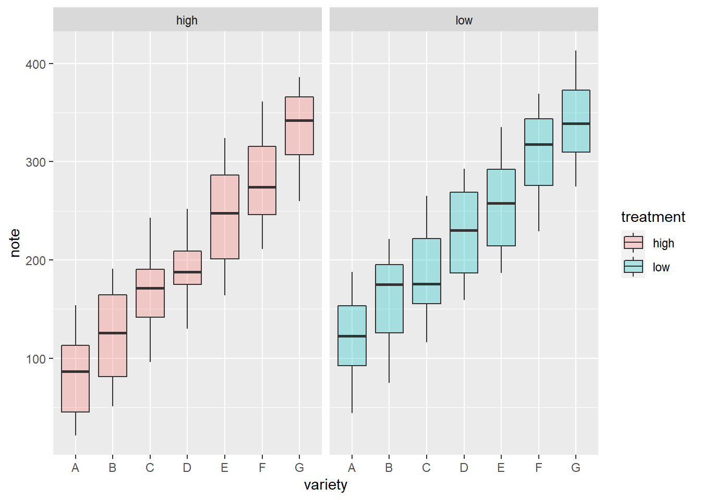
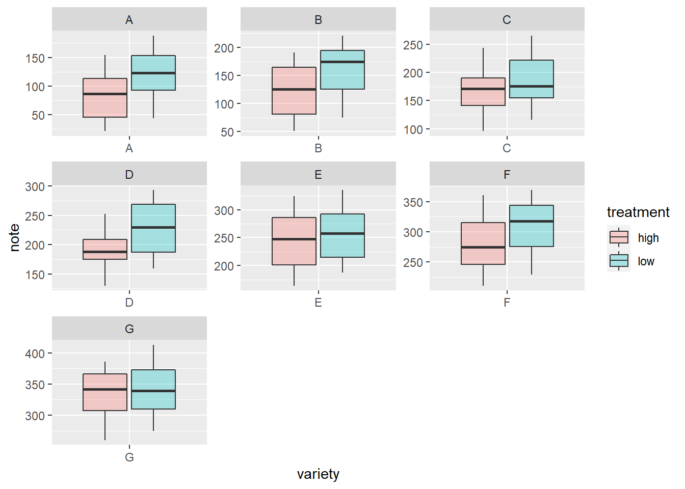

Chapter 2 Boxplot
In descriptive statistics, a box plot or boxplot is a method for graphically depicting groups of numerical data through their quartiles. Box plots may also have lines extending from the boxes (whiskers) indicating variability outside the upper and lower quartiles, hence the terms box-and-whisker plot and box-and-whisker diagram. Outliers may be plotted as individual points. Box plots are non-parametric: they display variation in samples of a statistical population without making any assumptions of the underlying statistical distribution (though Tukey’s boxplot assumes symmetry for the whiskers and normality for their length). The spacings between the different parts of the box indicate the degree of dispersion (spread) and skewness in the data, and show outliers. In addition to the points themselves, they allow one to visually estimate various L-estimators, notably the interquartile range, midhinge, range, mid-range, and trimean. Box plots can be drawn either horizontally or vertically. Box plots received their name from the box in the middle. (Box plot - Wikipedia)
A boxplot is a standardized way of displaying the dataset based on a five-number summary: the minimum, the maximum, the sample median, and the first and third quartiles.
Minimum (Q0 or 0th percentile): the lowest data point excluding any outliers.
Maximum (Q4 or 100th percentile): the largest data point excluding any outliers.
Median (Q2 or 50th percentile): the middle value of the dataset.
First quartile (Q1 or 25th percentile): also known as the lower quartile qn(0.25), is the median of the lower half of the dataset.
Third quartile (Q3 or 75th percentile): also known as the upper quartile qn(0.75), is the median of the upper half of the dataset

2.1 Toy data generation
set.seed(20210113)
box_data <- data.frame(group=factor(rep(c("A", "B","C"), each=200)),
value=round(c(rnorm(200, mean=0, sd=5),rnorm(200,mean=10,sd=20), rnorm(200, mean=20, sd=10))))
head(box_data)## group value
## 1 A -3
## 2 A 9
## 3 A 1
## 4 A 6
## 5 A -6
## 6 A -52.2 Basic Boxplot with ggplot2
You can also embed plots, for example:
library(ggplot2)
# Basic Boxplot
ggplot(box_data, aes(x=1, y=value)) +
geom_boxplot()
# Basic Boxplot
ggplot(box_data, aes(x=group, y=value)) +
geom_boxplot()
2.3 Change the color
ggplot(box_data, aes(x=group, y=value)) +
geom_boxplot(fill="#6787B7", colour="grey", alpha=0.5)
2.4 Change the color by group
ggplot(box_data, aes(x=group, y=value, fill=group)) +
geom_boxplot(alpha=0.5) +
scale_fill_brewer(palette="BuPu") +
theme(legend.position="none")
2.5 geom_boxplot proposes several arguments to custom appearance
ggplot(box_data, aes(x=group, y=value)) +
geom_boxplot(
# custom boxes
color="#8D6E97",
fill="#8D6E97",
alpha=0.3,
# Notch?
notch=TRUE,
notchwidth = 0.8,
# custom outliers
outlier.colour="red",
outlier.fill="red",
outlier.size=3
) +
theme_minimal()
2.6 Boxplot with group and subgroup
# create a data frame
variety=rep(LETTERS[1:7], each=40)
treatment=rep(c("high","low"),each=20)
note=seq(1:280)+sample(1:150, 280, replace=T)
data=data.frame(variety, treatment , note)
# grouped boxplot
ggplot(data, aes(x=variety, y=note, fill=treatment)) +
geom_boxplot(alpha=0.3)
2.7 Boxplot using small multiple group
# One box per treatment
ggplot(data, aes(x=variety, y=note, fill=treatment)) +
geom_boxplot(alpha=0.3) +
facet_wrap(~treatment)
# one box per variety
ggplot(data, aes(x=variety, y=note, fill=treatment)) +
geom_boxplot(alpha=0.3) +
facet_wrap(~variety, scale="free")
2.8 Boxplot with different box widths
# create data
names <- c(rep("A", 20) , rep("B", 5) , rep("C", 30), rep("D", 100))
value <- c( sample(2:5, 20 , replace=T) , sample(4:10, 5 , replace=T), sample(1:7, 30 , replace=T), sample(3:8, 100 , replace=T) )
data <- data.frame(names,value)
# prepare a special xlab with the number of obs for each group
my_xlab <- paste(levels(data$names),"\n(N=",table(data$names),")",sep="")
# plot
ggplot(data, aes(x=names, y=value, fill=names)) +
geom_boxplot(varwidth = TRUE, alpha=0.2) +
theme(legend.position="none") +
scale_x_discrete(labels=my_xlab)